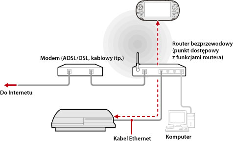

Sieć > Użycie zdalnego grania (za pomocą punktu dostępowego)
Użycie zdalnego grania (za pomocą punktu dostępowego)
Podłącz system PS3™ do punktu dostępowego za pomocą kabla Ethernet. Użyj funkcji obsługi sieci bezprzewodowej w urządzeniu obsługującym funkcję gry zdalnej, takim jak system PS Vita lub PSP™, aby połączyć się z systemem PS3™ poprzez punkt dostępowy.
Przykład typowej konfiguracji

Wskazówki
- Router bezprzewodowy to urządzenie rozszerzające zwykły router o funkcjonalność punktu dostępowego. Punkt dostępowy to urządzenie pozwalające na bezprzewodowe łączenie z siecią. Router jest stosowany wtedy, gdy jednego połączenia internetowego ma używać kilka urządzeń.
- Również w modemie mogą być dostępne funkcje routera. Konsolę PS3™ należy podłączyć do urządzenia wyposażonego w funkcjonalność routera.
- Jeśli funkcjonalność routera ma zarówno punkt dostępowy, jak i modem, to na jednym z tych urządzeń funkcjonalność routera należy wyłączyć. Konsola PS3™ i urządzenie obsługujące funkcję gry zdalnej muszą być podłączone do tej samej sieci. W przypadku jednoczesnego stosowania dwóch lub więcej routerów może się zdarzyć, że konsola PS3™ i urządzenie będą podłączone do osobnych sieci i wtedy funkcji gry zdalnej nie będzie można używać.
Przygotowanie do korzystania (konsola PS3™ i urządzenie obsługujące funkcję gry zdalnej)
Aby po raz pierwszy skorzystać z funkcji gry zdalnej, należy zarejestrować (zsynchronizować) urządzenie obsługujące funkcję gry zdalnej, takie jak system PS Vita lub PSP™, w systemie PS3™. Aby zarejestrować (zsynchronizować) urządzenie, należy wybrać opcje  (Ustawienia) >
(Ustawienia) >  (Ustawienia gry zdalnej) > [Zarejestruj urządzenie].
(Ustawienia gry zdalnej) > [Zarejestruj urządzenie].
Przygotowanie do korzystania (urządzenie obsługujące funkcję gry zdalnej)
Utwórz połączenie sieciowe łączące urządzenie z punktem dostępowym. Jeśli w urządzeniu zapisano już połączenie sieciowe, nie musisz tworzyć nowego. Szczegółowe informacje na temat tworzenia połączenia sieciowego w urządzeniu można znaleźć w instrukcji obsługi urządzenia.
Używanie funkcji gry zdalnej — system PS Vita
1. |
W systemie PS Vita stuknij kolejno polecenia |
|---|
 (Gra zdalna PS3) > [Początek].
(Gra zdalna PS3) > [Początek].2. |
W systemie PS3™ wybierz opcje |
|---|
 (Sieć) >
(Sieć) >  (Gra zdalna).
(Gra zdalna). 3. |
W systemie PS Vita stuknij opcję [Połącz przez sieć prywatną]. |
|---|
Używanie funkcji gry zdalnej — system PSP™
1. |
Na konsoli PS3™ wybierz opcje |
|---|---|
2. |
Na konsoli PSP™ wybierz opcje |
3. |
Naciśnij przycisk [Connect via Private Network]. |
4. |
Na liście połączeń zaznacz połączenie z punktem dostępu, które ma być używane przez funkcję zdalnego grania. |
 (Remote Play).
(Remote Play).Wskazówki
- Funkcji zdalnego grania można używać tylko w granicach zasięgu sygnału punktu dostępowego.
- W przypadku włączenia ustawienia zdalnego uruchamiania systemu PS3™ można włączyć automatyczne włączanie systemu (funkcja Wake on LAN). Szczegółowe informacje zawiera część (Ustawienia) > (Ustawienia gry zdalnej) > [Zdalne uruchamianie] w niniejszej instrukcji.
- W przypadku przejścia do ekranu innej aplikacji podczas korzystania z funkcji gry zdalnej połączenie zostanie przerwane po 30 sekundach.